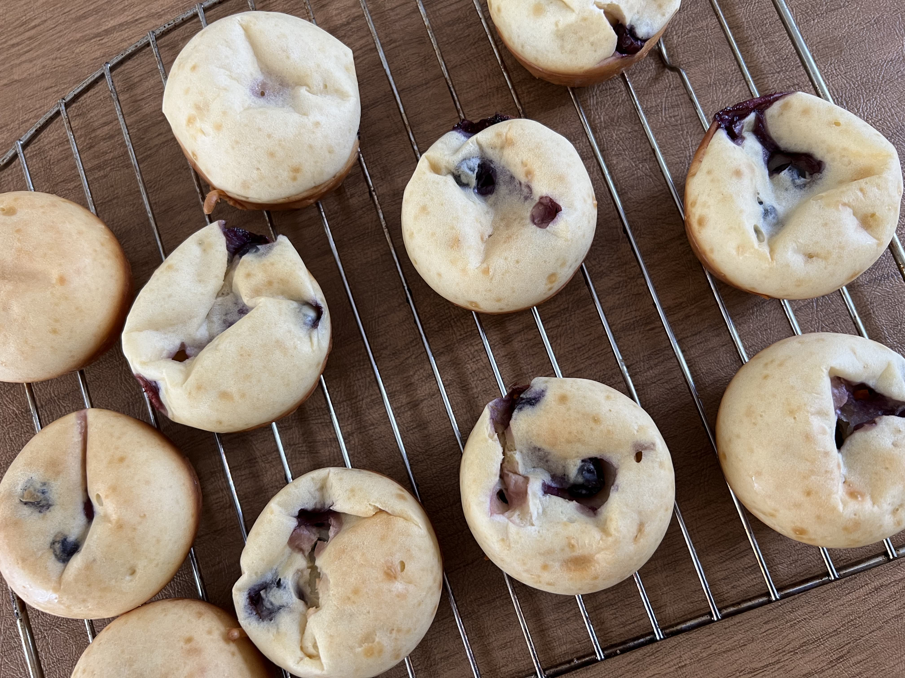

Quick and easy breakfast or snack.
Makes: 12 muffins
Ingredients
- 1 cup cottage cheese
- 1.5 cups all purpose flour
- 1/2 cup milk
- 2 large eggs
- 2 tsp baking powder
- 2 tsp vanilla
- 2 tbsp maple syrup
- chocolate chips or blueberries (optional)
Instructions
- Preheat oven to 350 degrees.
- Add cottage cheese, flour, milk, eggs, baking powder, vanilla and maple syrup into blender. Mix until smooth.
- Stir in chocolate chips or blueberries.
- Spray muffin tin with oil and then pour mixture into muffin tins.
- Bake for 20-25 minutes. Let cool in pan for 5-10 minutes and then remove to cooling rack.
Website: Cottage Cheese Muffins